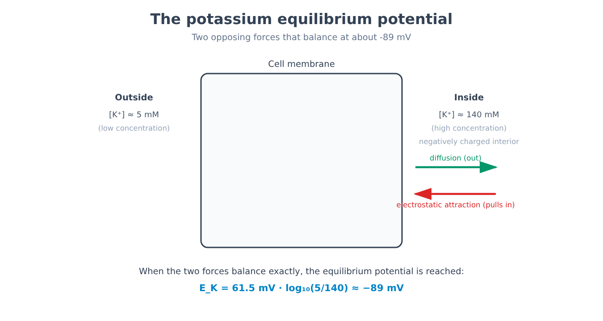
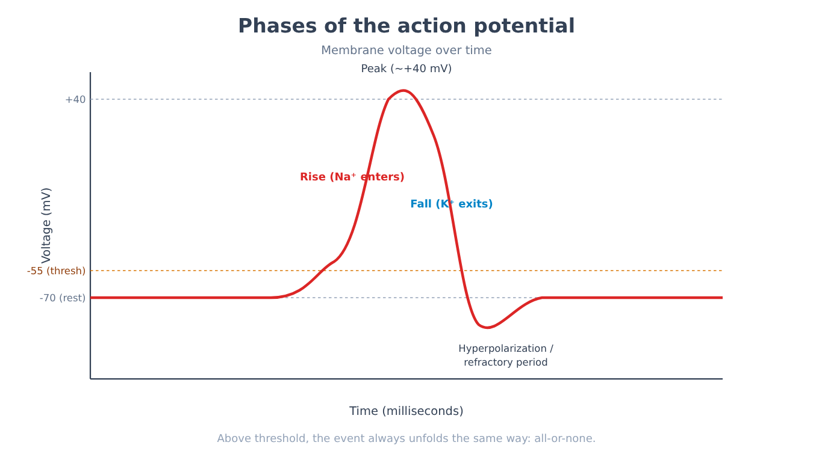
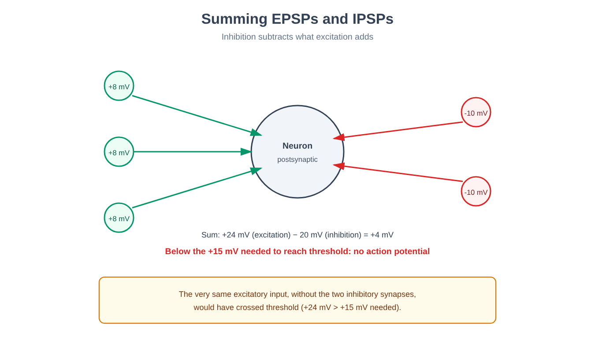
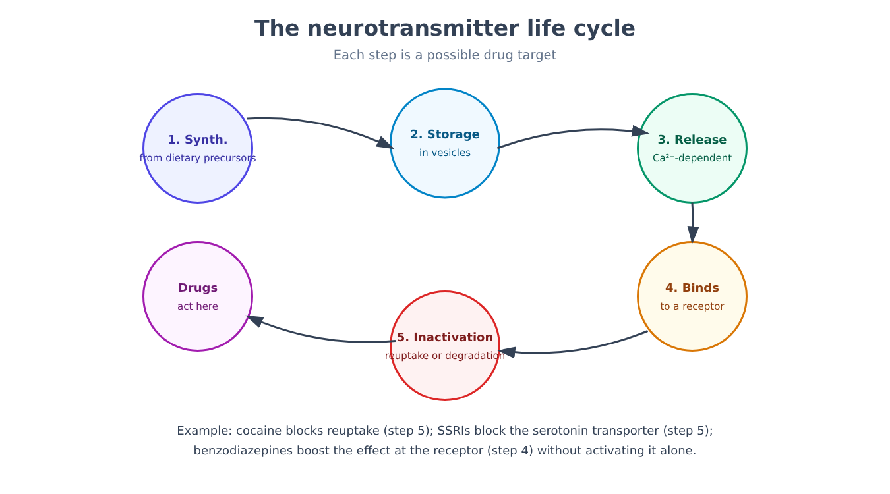
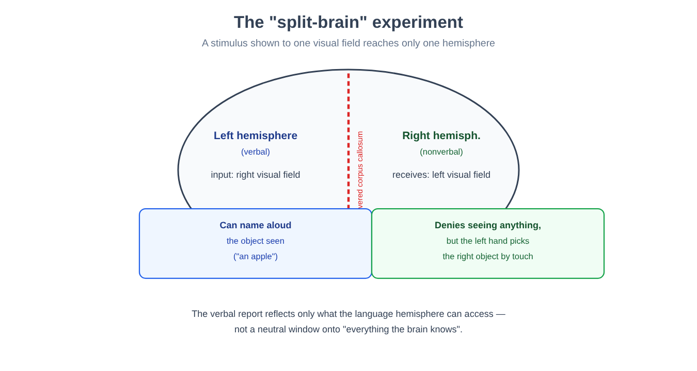
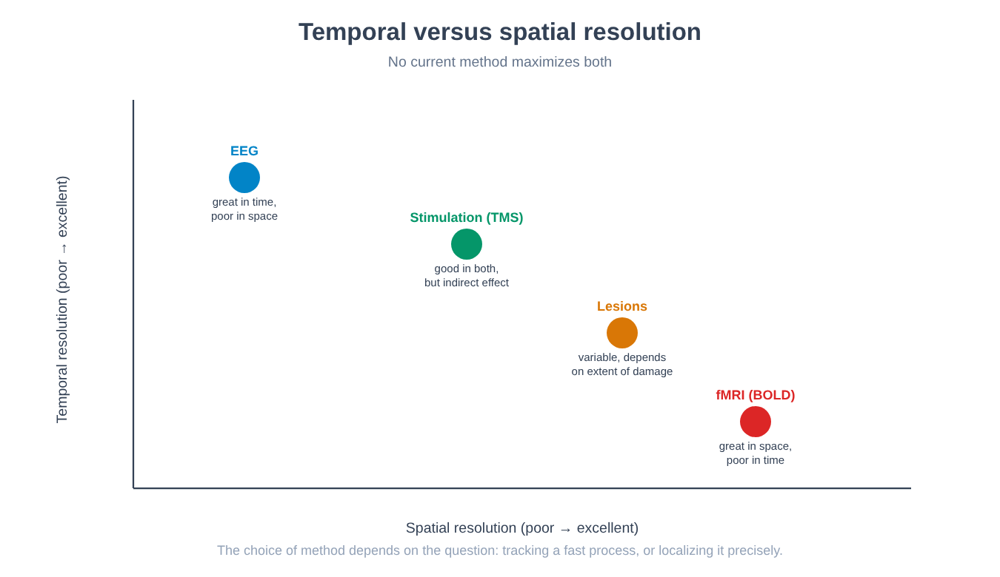
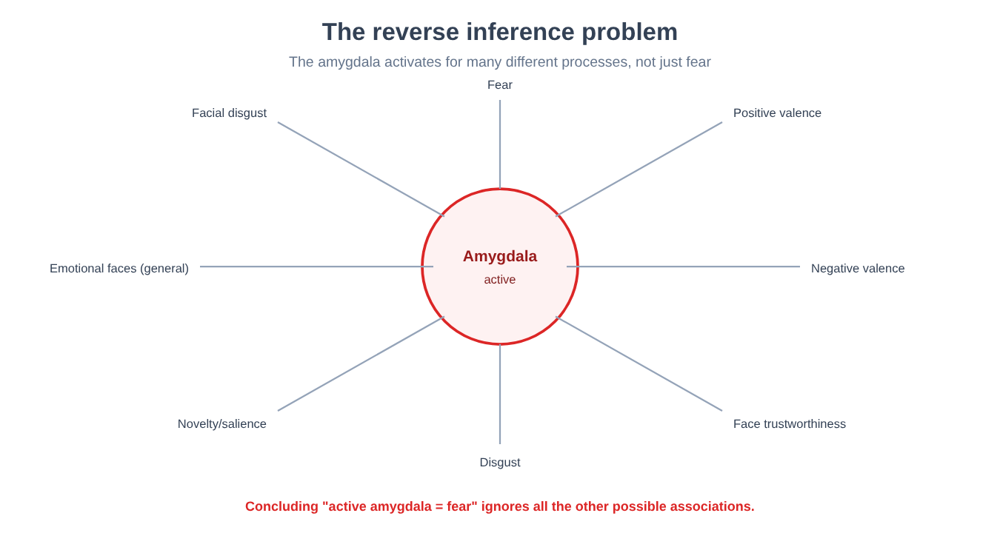
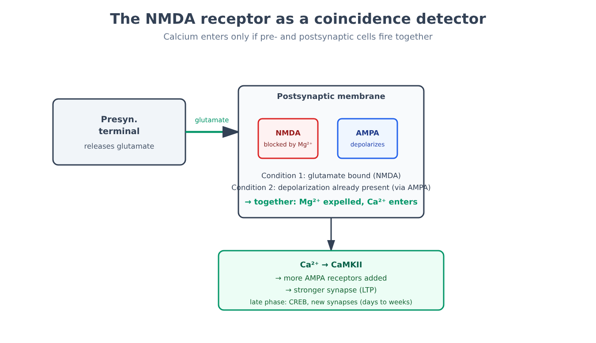
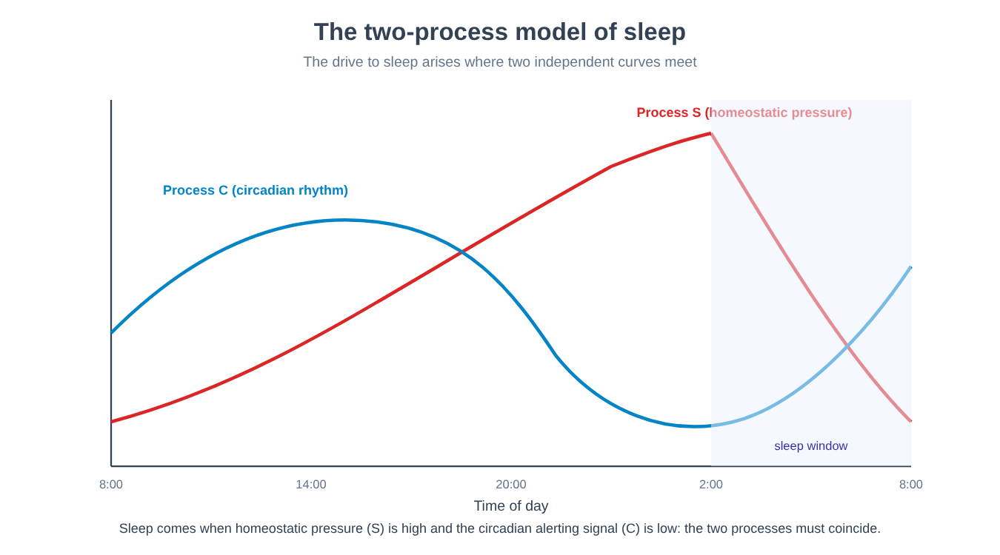
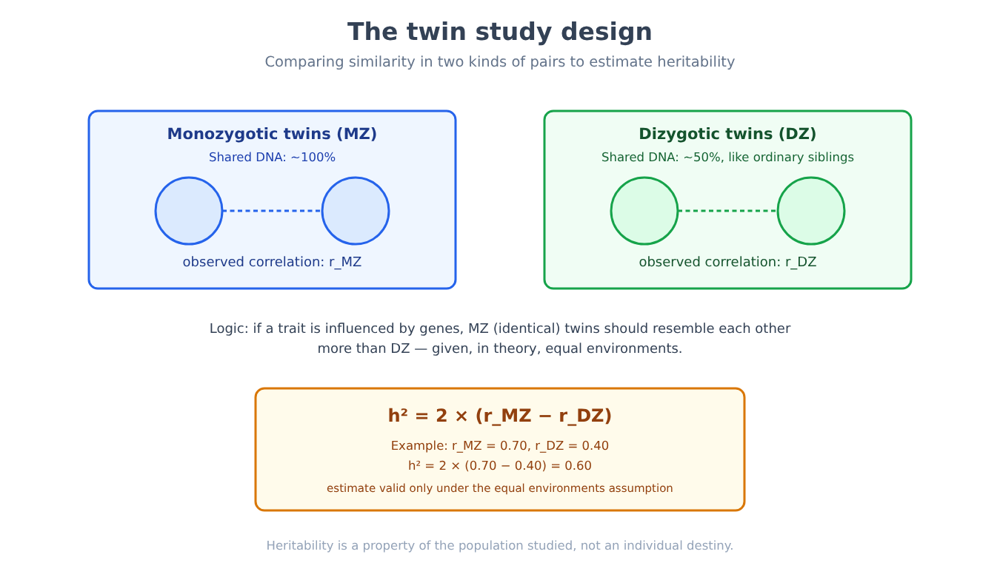

Part IV. The substrate: nervous system and behavior
Chapter 20 — The neuron as a signaling unit
[IN A NUTSHELL]
Every psychological phenomenon described so far — a memory, an emotion, a decision — must, at some level of description, be implemented by cells exchanging signals. This chapter explains how a single nerve cell builds an electrical signal out of differences in ion concentration, why that signal is all-or-none, and which formula gives the equilibrium point toward which each ion "pushes" the cell.
Imagine having to get a message from one end of a room to the other using only doors that open and close, with no actual electrical wires. That is, in essence, the problem every neuron solves continuously: it does not carry an electrical signal the way a copper cable would, where electrons flow freely along the entire length. Instead, point by point along its membrane, it builds an electrical event that regenerates itself — and to understand how, we must start from a fact that at first glance looks like a technical detail: inside and outside the cell, the concentrations of certain ions are systematically different.
Pumps as batteries, channels as switches
The membrane of a neuron contains ion pumps: proteins that consume energy (in the form of ATP) to move ions against their concentration gradient — more potassium (K⁺) inside, more sodium (Na⁺), chloride (Cl⁻) and calcium (Ca²⁺) outside. The result is a cell that, at rest, contains much more K⁺ inside than outside, and much less Na⁺ inside than outside. These pumps work like batteries charged in advance: they store energy in the form of a concentration gradient, ready to be released later.
Ion channels are the switch that releases that stored energy: when they open, they let a specific ion move down its own gradient — from the region of higher concentration to the region of lower concentration — producing an electrical current across the membrane. A channel that opens for K⁺ lets potassium out (carrying positive charges out of the cell, and so making the inside more negative); a channel that opens for Na⁺ lets sodium in (carrying positive charges in, making the inside more positive).
The resting potential and the equilibrium potential
At rest, some K⁺ channels — called leak channels — always remain partially open. K⁺ therefore tends to leave the cell, following its own concentration gradient. But as positive K⁺ leaves, the inside of the cell becomes increasingly negative, and this growing negativity begins to "pull" the positive K⁺ back in through electrostatic attraction. At a certain point, the push outward (diffusion, due to concentration) and the push back inward (electrostatic attraction, due to charge) balance exactly. The voltage at which this balance is reached for a given ion is called that ion's equilibrium potential, and it is the value toward which that ion, on its own, "would push" the membrane if it were the only one able to cross it.
[FORMULA]
The Nernst equation makes it possible to calculate the equilibrium potential of a single ion from its concentrations inside and outside the cell:
E_ion = (RT / zF) · ln([ion]out / [ion]in)
Where:
• E_ion is the equilibrium potential of the ion, expressed in volts (or millivolts).
• R is the universal gas constant (8.314 J/(mol·K)) — how much thermal energy is available per mole of substance at a given temperature.
• T is the absolute temperature in kelvins (for an organism at 37 °C, T = 310 K).
• z is the valence of the ion (its electrical charge: +1 for K⁺ and Na⁺, +2 for Ca²⁺, −1 for Cl⁻).
• F is the Faraday constant (96,485 coulombs/mol) — the electrical charge carried by one mole of elementary charges.
• ln is the natural logarithm.
• [ion]out and [ion]in are the concentrations of the ion outside and inside the cell.
At body temperature, the term RT/F, converted to millivolts and with the natural logarithm rewritten as a base-10 logarithm (multiplying by 2.303), simplifies to a practical constant of about 61.5 mV for a monovalent ion (z = 1). For quick use, the formula therefore becomes:
E_ion ≈ (61.5 mV / z) · log₁₀([ion]out / [ion]in)
Worked example — the equilibrium potential of potassium. Typical values for a mammalian neuron are [K⁺]in ≈ 140 millimolar (mM) and [K⁺]out ≈ 5 mM, with z = +1 (potassium carries a single positive charge). Substituting:
E_K = 61.5 mV · log₁₀(5 / 140) = 61.5 mV · log₁₀(0.0357) = 61.5 mV · (−1.447) ≈ −89 mV
This number — close to the resting potential values actually measured in real neurons, typically between −65 and −70 mV — shows why the resting potential is dominated by potassium: if the K⁺ leak channels were the only channels open at rest, the cell would settle almost exactly at this value. The fact that the real resting potential (about −70 mV) is slightly less negative than −89 mV indicates that a small amount of Na⁺ also continuously leaks into the cell, shifting the balance toward somewhat more positive values — consistent with the fact that the equilibrium potential of Na⁺, calculated with its typical concentrations ([Na⁺]out ≈ 145 mM, [Na⁺]in ≈ 15 mM), turns out positive: E_Na = 61.5 mV · log₁₀(145/15) ≈ +61 mV — very far from the resting potential, and for precisely this reason capable of producing a dramatic change when the Na⁺ channels open en masse, as in the next section.

The action potential: an all-or-none event
When the membrane voltage, through the effect of incoming signals (described in the next chapter), reaches a threshold — typically around −55 mV — an event is triggered that is completely different from anything that has happened so far: the action potential. The sequence is as follows.
Voltage-gated sodium channels — channels that open not in response to a chemical substance but in response to the membrane voltage itself — open en masse. Na⁺, driven both by its own concentration gradient and now by electrostatic attraction (the inside is negative, sodium is positive), floods into the cell. This produces a positive feedback mechanism: the more Na⁺ enters, the more the membrane depolarizes (becomes positive); the more it depolarizes, the more sodium channels open. It is precisely this feedback that makes the action potential an all-or-none event: once the threshold is crossed, the event runs to its maximum regardless of whether the initial stimulus was just above or far above threshold — there is no such thing as a "half" action potential.
The rising phase stops when the sodium channels inactivate (a mechanism distinct from closing: the channel stops responding even though the voltage would remain favorable) and, at the same time, the voltage-gated potassium channels, which are slower to activate, open. K⁺ flows out, bringing the membrane back toward negative values (falling phase) and often beyond the original resting potential, in a brief refractory period during which a new action potential is harder or impossible to generate. This refractory period prevents the signal from turning back on itself, ensuring that it propagates in only one direction along the axon.

[MIND THE LEAP]
It is easy to picture the action potential as an electrical current that "flows" along the axon, the same way electricity flows in a cable. That is not how it works: the action potential generated at one point of the membrane slightly depolarizes the adjacent stretch of membrane, bringing it in turn above threshold and triggering there a completely new action potential, with the same amplitude as the first. The signal does not travel: it regenerates, point after point, along the entire path — which is why it does not weaken with distance, unlike a passive electrical signal that fades progressively.
Conduction velocity and myelin
This point-by-point regeneration comes at a cost: it is slower than a passive electrical current. Many axons are wrapped in an insulator, myelin, produced by specialized glial cells, which reduces current leakage across the membrane in the insulated stretches. Instead of regenerating continuously, the action potential "jumps" from one gap in the myelin to the next — a mechanism called saltatory conduction — substantially increasing the speed of transmission without having to increase the diameter of the axon, which is the other variable that affects speed (wider axons offer less resistance).
[THE EXPERIMENTAL DESIGN]
The problem. Until the middle of the twentieth century there was no way to measure directly what changed electrically across the membrane of a single neuron during an action potential: the instruments of the time were neither precise nor fast enough.
The technical solution. The researchers (Hodgkin and Huxley, in the early 1950s, who used a technique developed by Cole and Marmont in the late 1940s) identified the giant axon of the squid — up to one millimeter in diameter, vastly larger than a mammalian axon — as an experimental model: large enough to insert an electrode inside it and measure the voltage across the membrane directly. With the voltage clamp technique, the membrane potential is artificially held fixed at a value chosen by the experimenter, while the current the cell generates to oppose that imposed value is measured — an indirect but precise measure of which ion channels are opening and in what sequence.
The result. By imposing different voltage levels and measuring the resulting currents, it became possible for the first time to separate the contribution of Na⁺ (a fast, inward current) from that of K⁺ (a slower, outward current), and to describe mathematically the entire sequence of the action potential — opening, inactivation, refractory period — with equations able to correctly predict the shape and speed of the observed signal.
Why it still matters today. The model built with this technique remains, in substance, the standard model used to describe the action potential in any neuron, human neurons included: a case in which an organism chosen purely for technical convenience (a squid, not a mammal) revealed a mechanism shared by enormously different species.
[COMMON BELIEF]
Thinking of the nervous system as an electrical wiring system — signals that "run" along wires, by analogy with household electrical current — is a useful but misleading image on at least two counts: first, the signal is not a passive current but a chemical-electrical event that regenerates itself; second, without the ion pumps that continuously charge the concentration gradients (a slow process that consumes metabolic energy) there would be no signal to propagate, however sophisticated the rest of the circuit. The pumps are not a maintenance detail: they are the precondition of every signal.
[MINI-TIMELINE]
The hypothesis that the cell membrane, selectively permeable to ions, was the seat of the nerve's electrical signal dates back to the early twentieth century. The voltage clamp technique, developed by Cole and Marmont in the late 1940s, was used by Hodgkin and Huxley for the complete characterization of the ionic currents of the action potential in the squid giant axon, published in the early 1950s. The principle then proved to be conserved, with variations in detail, throughout the animal kingdom — from fruit flies to mammals.
[KEY POINT OF THE CHAPTER]
• Ion pumps build concentration gradients by consuming energy; ion channels exploit them by letting currents flow toward the equilibrium potential of each ion.
• The equilibrium potential of an ion is calculated with the Nernst equation; for K⁺, with typical concentrations, it comes to about −89 mV, close to the real resting potential (about −70 mV), because potassium is mainly responsible for it.
• The action potential is an all-or-none event: above threshold, the mass opening of sodium channels triggers a positive feedback that is independent of the intensity of the initial stimulus.
• Saltatory conduction along myelinated stretches increases transmission speed without requiring wider axons.
• The standard model of the action potential was built with the voltage clamp technique on the squid giant axon, and has proved generalizable to very different species, humans included.
Chapter 21 — The synapse
[IN A NUTSHELL]
An action potential that reaches the end of an axon must cross a physical gap that separates it from the next neuron: the synapse. This chapter explains how an electrical signal turns into a chemical signal and then back into an electrical one, why most synapses transmit not a "yes" or a "no" but a graded contribution that adds up with other contributions, and why inhibition is, in this balance, as important as excitation.
From electrical signal to chemical signal and back
At the axon terminal, the incoming action potential opens voltage-gated calcium channels. The Ca²⁺ that enters triggers the fusion of small vesicles containing neurotransmitter with the presynaptic membrane, releasing their contents into the synaptic cleft — a process called exocytosis. The neurotransmitter diffuses across that gap (about twenty nanometers wide) and binds to specific receptors on the membrane of the next (postsynaptic) cell.
This binding opens ion channels on the postsynaptic membrane, producing a postsynaptic potential — a small, local, graded change in voltage, very different from the all-or-none action potential of the previous chapter. If the opened channel lets positive charges in (typically Na⁺ or Ca²⁺), the postsynaptic potential is excitatory (EPSP, excitatory postsynaptic potential): it brings the cell closer to threshold. If the channel lets negative charges in (typically Cl⁻) or positive charges out, the postsynaptic potential is inhibitory (IPSP, inhibitory postsynaptic potential): it moves the cell away from threshold.
Once bound, the neurotransmitter is then removed from the synaptic cleft — through reuptake by the neuron that released it, or through enzymatic degradation — so that the signal does not remain active indefinitely. This entire pathway — synthesis, storage in vesicles, calcium-dependent release, receptor binding, inactivation — is, as we will see in the next chapter, the complete map of the points at which a psychoactive drug can intervene.
Summation: why the cell does not respond to a single impulse
A single EPSP is almost always too small, on its own, to bring the postsynaptic cell to the threshold of the action potential. Each neuron instead receives thousands of synapses at once, some excitatory and some inhibitory, and the cell "decides" whether to generate an action potential by algebraically adding up all these contributions at a given moment and at a given point — a process called summation, which can be spatial (simultaneous inputs from different synapses) or temporal (inputs close together in time from the same synapse, which overlap before fading out).
[NUMBERS]
A simplified numerical example, purely illustrative, helps to see the principle at work. Suppose a neuron's resting potential is −70 mV and its threshold is −55 mV, so a net change of +15 mV is needed to generate an action potential. If three excitatory synapses are activated almost simultaneously, each producing an EPSP of +8 mV, their summed contribution is +24 mV — enough, by itself, to cross the threshold. But if at the same instant two inhibitory synapses are also activated, each producing an IPSP of −10 mV, the inhibitory contribution subtracts 20 mV: the net total is +24 − 20 = +4 mV, well below the +15 mV required. The very same excitatory input, in the presence of sufficient inhibition, produces no action potential. This example, however simplified compared with biophysical reality (where the position of the synapses on the dendrite, their distance from the trigger zone and their exact timing matter as much as their number), shows why inhibition is not simply a "minus" relative to excitation, but an equally decisive component of the computation.

Ionotropic versus metabotropic
Not all receptors work the same way. Ionotropic receptors are themselves ion channels: the binding of the neurotransmitter opens the channel directly, producing a fast (on the order of a millisecond) and direct effect. Metabotropic receptors (often coupled to G proteins) are not channels: the binding of the neurotransmitter activates a cascade of second messengers inside the cell, which can in turn open channels located elsewhere, alter gene expression, or produce effects that are slower (seconds or minutes) but often longer-lasting and more widely distributed in the cell. The same chemical can therefore produce very different effects depending on which type of receptor it encounters — a point that will become central in the next chapter, when the same question arises for entire drugs.
There is one exception to this whole chemical mechanism: the electrical synapse, in which two cells are connected directly by protein channels called connexons, which allow ionic current to pass physically from one cell to the other without any chemical intermediary. It is faster than the chemical synapse but also more rigid: it does not allow the amplification, inhibition or plasticity that the chemical synapse makes possible, and for this reason it remains relatively rare in the adult mammalian nervous system, more common in circuits that require immediate synchronization among many cells.
[THE EXPERIMENTAL DESIGN]
The problem. At the beginning of the twentieth century it was not clear whether transmission between a nerve and a target organ (for example the heart) was a purely electrical phenomenon — current that "jumps" directly from one cell to the other — or whether it involved the release of an intermediate chemical substance.
The design. Two isolated frog hearts were kept beating in two separate containers, each bathed in its own physiological solution, but connected so that the fluid from the first heart could be transferred to the second. The vagus nerve of the first heart — which slows its beat when stimulated — was stimulated electrically, and the first heart's beat slowed as expected. The fluid bathing that first heart was then transferred to the second container, with no direct electrical or nervous connection between the two hearts.
The result. The second heart too, isolated and never stimulated directly, slowed its beat as soon as it received the fluid from the first. The only compatible explanation was that stimulation of the vagus nerve had released into the fluid a chemical substance capable on its own of producing the effect — named at the time "vagus substance" and later identified as acetylcholine.
Why it is a foundational experiment. This experiment (Loewi, 1921) demonstrated, with a simple and conclusive design, that communication between the nervous system and a target organ can be chemical and not only electrical — the first experimental demonstration of the existence of a neurotransmitter, and the basis of the whole next chapter on neurotransmitters and drugs.
[CONTROVERSIAL QUESTION]
A common conceptual shortcut holds that excitation "switches on" circuits and inhibition "switches them off," as if inhibition were a secondary or safety function. Research on the so-called excitation/inhibition (E/I) balance shows instead that inhibition is constitutive of the computation itself: it determines which signals get through, synchronizes the activity of populations of neurons into functionally relevant rhythms, and its alteration (more than a simple excess of excitation) is implicated in heterogeneous clinical conditions, from epilepsy to certain developmental disorders. Treating inhibition as a mere brake, rather than as an active ingredient of the signal, underestimates how much computational work the neural network performs by subtracting, not only by adding.
[KEY POINT OF THE CHAPTER]
• At the chemical synapse, the electrical signal is converted into a chemical signal (released neurotransmitter) and then back into an electrical signal (postsynaptic potential) in the next cell.
• The two-frog-heart experiment was the first to show that this transmission can be chemical, not only electrical.
• Postsynaptic potentials are graded, not all-or-none, and they summate spatially and temporally: a neuron "decides" on the basis of the net balance between EPSPs and IPSPs.
• Ionotropic receptors act within milliseconds by opening a channel directly; metabotropic receptors act more slowly through second-messenger cascades.
• Inhibition is not a mere brake: it is an active part of the computation every network of neurons performs.
Chapter 22 — Neurotransmitters and psychopharmacology
[IN A NUTSHELL]
The previous chapter described the life cycle of a neurotransmitter in general: synthesis, storage, release, binding, inactivation. This chapter applies that map to the main known neurotransmitter systems and to how psychoactive drugs intervene at each of its stages — and it addresses directly why the "chemical imbalance" formula, often used to explain depression to the public, is a simplification that the data do not support in its most widespread form.
The main neurotransmitter systems
A small number of neurotransmitter families implement the vast majority of communication in the nervous system.
| Neurotransmitter | Precursor | Main function in this book |
|---|---|---|
| Glutamate | glutamine | Fast excitation; basis of synaptic plasticity (chapter 25) |
| GABA | glutamate (via a dedicated enzyme) | Fast inhibition; target of benzodiazepines |
| Dopamine | tyrosine | Reward and motivation (chapter 52); motor control |
| Norepinephrine | tyrosine, downstream of dopamine | Arousal, stress response |
| Serotonin | tryptophan | Mood; target of the most widely used antidepressant drugs |
| Acetylcholine | choline | Neuromuscular junction; cortical arousal |
| Endocannabinoids | membrane lipids | Retrograde signaling, produced on demand, not stored in vesicles |
One point worth isolating: the function of a neurotransmitter is not a fixed property of the molecule, but depends on the brain region, on the type of receptor it binds to and on the circuit it is part of. The same dopamine that in the reward circuit signals a discrepancy between the expected and the obtained outcome (the prediction error already encountered, with a different formula, in the classical conditioning of chapter 15) is involved, in a separate motor circuit, in the fluidity of voluntary movement — whose impairment produces the motor symptoms of Parkinson's disease.
How a drug acts: two independent questions
Whether a drug produces a given effect depends on two logically separable factors. Pharmacokinetics concerns how much of the drug actually reaches the target: absorption, distribution, metabolism, elimination. The route of administration matters enormously — a substance injected directly into a vein reaches high plasma concentrations in about one minute, whereas the same substance taken orally is partly broken down by the liver before it even enters the circulation (first-pass metabolism), reducing the fraction that reaches the brain. Pharmacodynamics, on the other hand, concerns what the drug does once it reaches the target: an agonist activates the receptor by mimicking the natural neurotransmitter; an antagonist blocks the receptor without activating it, preventing the natural neurotransmitter from binding; a partial agonist activates the receptor but with a lower maximum effect than a full agonist, even at high doses — a property used deliberately in drugs designed to limit the risk of overdose.
A distinct category deserves attention because it is counterintuitive: a positive allosteric modulator does not bind to the same site as the natural neurotransmitter and has, on its own, no measurable effect — it only amplifies the effect of the neurotransmitter when the latter is already present. Benzodiazepines (a class of anxiolytic drugs) work exactly this way on the GABA-A receptor: they do not activate the receptor in the absence of GABA, but they cause the channel, when GABA binds, to open more often than normal.

[COMMON BELIEF]
It is widely believed that depression is caused by a "chemical imbalance," typically described as too low a level of serotonin — an idea known as the monoamine hypothesis of depression. The hypothesis arose from an indirect observation: drugs that increase the availability of serotonin or norepinephrine in the synaptic cleft (such as selective serotonin reuptake inhibitors, SSRIs) often relieve depressive symptoms. But therapeutic efficacy does not automatically demonstrate the causal mechanism of the disease: a painkiller that works does not imply that pain is caused by a deficiency of that drug. An umbrella review published in 2022 (Moncrieff and colleagues) systematically examined the direct evidence — levels of serotonin and its metabolites, receptor density and sensitivity, genetic variants of the serotonin transporter — and found no consistent support for the idea that depression is reliably associated with lower serotonin. Another finding is hard to reconcile with the simplest version of the hypothesis: experimental depletion of tryptophan (the precursor of serotonin) in healthy people does not produce depression, but it worsens it in those already in remission from a previous episode — a specific, not general, effect, incompatible with a "more serotonin, less depression" mechanism applicable to everyone.
[DOES IT STILL HOLD?]
What, then, remains of the monoamine hypothesis? SSRIs remain effective drugs for a substantial share of people with depression — but about half of patients do not respond to their first antidepressant (in the STAR*D study, response around 47% and remission around 30%), and several effective antidepressant drugs (such as ketamine, which acts on glutamate, not on serotonin) do not share the monoaminergic mechanism at all. An alternative model, complementary rather than a replacement, proposes that chronic stress induces atrophy of limbic circuits and a reduction in brain-derived neurotrophic factor (BDNF) — a protein that supports the survival and plasticity of neurons — and that chronic antidepressants act by increasing this factor, a slower effect (weeks) and one more consistent with the therapeutic delay observed clinically than a simple acute increase in serotonin. The most honest judgment, to date, is that the monoamine hypothesis in its original form — "depression is caused by too little serotonin" — is not supported by the direct evidence, while the clinical efficacy of some drugs acting on those systems remains a solid finding, to be explained by more complex mechanisms that are still partly unclear.
[NUMBERS]
About half of people with major depression do not respond to their first antidepressant (in the STAR*D study with citalopram, an SSRI: response around 47%, remission around 30%), and some do not respond even to subsequent attempts — such a heterogeneous response makes a single, universal mechanism implausible, though on its own it does not rule one out.
[THE EXPERIMENTAL DESIGN]
The problem to explain. Ketamine is, pharmacologically, an antagonist of the NMDA receptor — an excitatory glutamate receptor. Blocking an excitatory receptor should, intuitively, reduce overall excitatory activity. Yet ketamine produces a rapid antidepressant effect (within 24 hours, versus the 2-3 weeks typical of SSRIs) associated with an increase, not a reduction, in glutamatergic transmission.
The proposed explanation. The NMDA receptors targeted by ketamine are located in part on the terminals of inhibitory GABAergic interneurons, whose normal activation restrains the release of glutamate from nearby excitatory neurons. By blocking NMDA on those inhibitory interneurons, ketamine removes the drive that would activate them — the interneuron stops releasing GABA, the excitatory neuron it was restraining is freed from inhibition and releases more glutamate than normal, which in turn strongly activates postsynaptic AMPA receptors. It is a double negative: blocking an excitatory receptor on an inhibitory cell produces, downstream, more excitation, not less.
Why it matters. The resulting AMPA activation triggers cascades of synaptic plasticity (related to the mechanism of chapter 25) that, according to one of the most debated hypotheses, would be the engine of the antidepressant effect — not the subjective dissociative experience that ketamine produces at higher doses, which is instead a distinct side effect. The kinetics themselves confirm that the mechanism differs from that of SSRIs: a single administration relieves symptoms within a day, a time frame incompatible with any explanation based on a simple increase in serotonin.
[KEY POINT OF THE CHAPTER]
• The life cycle of a neurotransmitter (synthesis, storage, release, binding, inactivation) is also the map of all the points at which a drug can intervene.
• Agonists, antagonists, partial agonists and positive allosteric modulators represent logically distinct ways of acting on a receptor.
• The hypothesis that depression is caused by a simple serotonin deficit is not supported by the direct evidence (Moncrieff and colleagues, 2022), although SSRIs remain effective drugs for a substantial share of patients.
• The mechanism of ketamine — an antagonist that increases excitation by disinhibiting a circuit — shows how a drug can produce the opposite of the intuitive effect starting from its direct molecular target.
Chapter 23 — Architecture of the brain
[IN A NUTSHELL]
Having described how a single neuron generates a signal and how it transmits it to another, this chapter moves up a level: how the hundreds of regions that make up the nervous system are organized as a whole, what it means that the two hemispheres are not identical in their functions, and why the phrase "the brain area for X" hides more than it reveals.
An organization that arises from development
To a first, very rough approximation, the nervous system divides into the central nervous system (brain and spinal cord) and the peripheral nervous system (everything else — nerves connecting the center to the periphery). The peripheral nervous system in turn divides into a somatic component (voluntary, to the skeletal muscles) and an autonomic component (involuntary, to the internal organs), and the latter into a sympathetic branch (mobilization, "fight or flight"), a parasympathetic branch (recovery, "rest and digest") and an enteric branch (autonomous control of the gut).
The brain itself is not organized at random: its adult structure closely mirrors three divisions already present in the embryo — which, with development, will give rise to five main regions. This is not an embryological detail for its own sake: using development as a map helps one find one's way around adult anatomy much better than an arbitrary list of Latin names, because regions that are close in development tend to remain interconnected and functionally related in the adult.
At the tissue level, gray matter is made up of cell bodies, dendrites and unmyelinated axons — where most local processing takes place; white matter, whose pale color comes from myelin, is made up of bundles of myelinated axons connecting different regions — the long-distance communication "highways" of the nervous system.
Cortex and subcortex
The cerebral cortex, the outermost and evolutionarily most recent layer, is organized into lobes (frontal, parietal, temporal, occipital) associated, roughly rather than sharply, with different functions: planning and motor control in the frontal lobe, somatosensory and spatial processing in the parietal, auditory processing and complex recognition in the temporal, visual processing in the occipital. Beneath the cortex lie evolutionarily older structures — among them, structures that will recur several times in the coming chapters: the thalamus (an almost obligatory relay station for sensory information headed to the cortex), the hippocampus (central to memory, treated in full in Part VI), the amygdala (central to emotional learning, treated in full in Part VIII) and the basal ganglia (central to the selection and initiation of voluntary movement).
Lateralization: two hemispheres, not two separate minds
The two cerebral hemispheres, although they look almost like mirror images in shape, are not functionally identical — a phenomenon called lateralization. The best-known example concerns language, typically more dependent on the left hemisphere in the great majority of right-handed people. But lateralization is a matter of degree and relative specialization, not of absolute exclusivity: both hemispheres almost always take part in any complex task, albeit with different contributions.
[THE EXPERIMENTAL DESIGN]
The clinical context. In some cases of severe, drug-resistant epilepsy, a surgical procedure was performed that severed the corpus callosum — the large bundle of white matter connecting the two hemispheres — to prevent epileptic discharges from spreading from one hemisphere to the other. This produced patients whose two hemispheres were functionally disconnected from each other, while each remained intact and functioning on its own: the so-called "split-brain" patients.
The experimental design. Exploiting the anatomical arrangement whereby each visual field projects mainly to the opposite hemisphere, the researchers (Sperry and Gazzaniga, between the 1960s and 1970s) presented images or words very briefly to only one side of these patients' visual field, so that the information reached only one hemisphere without being able to cross the severed corpus callosum to reach the other.
The result. When the image was shown to the visual field projecting to the left hemisphere (typically dominant for language), the patient could name it aloud without difficulty. When the same image was shown to the visual field projecting to the right hemisphere, the patient often denied having seen anything — yet the left hand (controlled by the right hemisphere) could correctly pick out by touch, behind a screen, the object corresponding to the image, while the patient remained unable to say aloud which object they had chosen and why.
Why it matters. This double result — the right hemisphere "knows" something that the verbal left hemisphere cannot report — showed that the two hemispheres can process information and perform tasks in parallel and relatively independently, and that verbal language is not neutral access to "everything the brain knows": it is the output of a single hemisphere, which under these experimental conditions has no direct access to what the other hemisphere processes.

[COMMON BELIEF]
Expressions such as "the brain area for language" or "the area for fear" are convenient but misleading if taken literally. Almost no complex psychological function depends exclusively on a single region: the same function is typically supported by several cooperating regions (a principle called degeneracy, in the technical sense of distributed redundancy, not in the everyday sense of the word), and the same region typically takes part in several different functions depending on the context and on the connections active at that moment. This explains why even extensive lesions can leave abilities surprisingly intact (the brain often has alternative pathways) and why small lesions in strategic locations can have disproportionate effects. A related and even starker myth — "we use only 10% of our brain" — is simply false: the neuroimaging techniques of chapter 24 show activity distributed, at different times, across practically all brain regions over the course of an ordinary day; no area remains permanently inactive.
[KEY POINT OF THE CHAPTER]
• The organization of the nervous system, from central to peripheral, largely reflects its origin in embryonic development.
• Cortex and subcortex contribute in different ways: the cortex to evolutionarily more recent processing, specialized by lobe; the subcortical or limbic-system structures (thalamus, hippocampus, amygdala, basal ganglia) to older and equally essential functions.
• Experiments on "split-brain" patients showed that the two hemispheres can process information independently, and that verbal report reflects only what the language hemisphere has access to.
• "The area for X" is a useful but imprecise shortcut: function is almost always distributed and redundant, not localized exclusively.
Chapter 24 — How to look inside a working brain
[IN A NUTSHELL]
How can we know what the brain is doing while it thinks, without being able to open it? This chapter sets out the main methods — lesions, stimulation, electroencephalography, functional magnetic resonance imaging — with their respective temporal and spatial resolutions, and addresses a logical problem that runs through much neuroimaging research: working backward from an observed activation to the psychological process that caused it is a much more fragile inference than it seems.
Four different windows onto the same object
No method available today observes "thought" directly. Each method observes an indirect trace — electrical, magnetic, metabolic — and each does so with a different trade-off between two properties that rarely coexist in the same instrument: temporal resolution (how quickly a change can be followed) and spatial resolution (how precisely one can locate where it happens).
The study of lesions — natural (stroke, trauma) or, in animals, experimentally induced — shows which functions require a given structure, by comparing what a person or an animal can still do with what they can no longer do after localized damage. The most solid logic in this field is the double dissociation: finding a patient A who loses ability X but retains ability Y after a lesion, and a patient B who loses Y but retains X after a different lesion. This rules out that X and Y simply depend on the same general resource (for example attention, or the general health of the brain) damaged more or less severely: if they depended on the same resource, one would not expect to see the reversed pattern in the two patients.
Brain stimulation — direct electrical stimulation during surgery, or noninvasive methods such as transcranial magnetic stimulation (TMS) — makes it possible to produce an effect temporarily (an involuntary movement, a momentary disruption of an ability) by artificially activating or deactivating a region, offering a test of necessity that complements that of natural lesions but is reversible and controlled by the experimenter.
The electroencephalogram (EEG) measures, through electrodes placed on the scalp, the synchronized electrical activity of large populations of cortical neurons. It has excellent temporal resolution (milliseconds, able to follow activity almost in real time) but poor spatial resolution: the electrical signal spreads and mixes before reaching the scalp, making it difficult to establish precisely from which deep point in the brain it comes.
Functional magnetic resonance imaging (fMRI) instead measures, indirectly, blood flow: when a group of neurons is more active, it requires more oxygen, and oxygen-rich blood has slightly different magnetic properties from oxygen-poor blood — a difference that fMRI detects as the BOLD signal (blood-oxygen-level-dependent). It is crucial to be precise on this point: fMRI does not measure the electrical activity of neurons, but a delayed metabolic consequence of that activity, which takes a few seconds to appear fully. This gives fMRI excellent spatial resolution (millimeters, able to locate even deep structures precisely) but poor temporal resolution relative to the real speed of neural processes (seconds, not milliseconds).
| Method | What it measures | Temporal resolution | Spatial resolution |
|---|---|---|---|
| Lesion studies | Function lost/retained after damage | — (observational) | Variable, depends on the extent of the damage |
| Stimulation (electrical, TMS) | Effect caused by artificial activation/inhibition | Good (immediate) | Moderate to good |
| EEG | Synchronized electrical activity of neuronal populations | Excellent (milliseconds) | Poor |
| fMRI (BOLD signal) | Change in oxygenated blood flow, an indirect proxy for activity | Poor (seconds) | Excellent (millimeters) |

The problem of reverse inference
Many neuroimaging studies proceed as follows: one observes that a certain task activates a certain region, and concludes that that region "performs" that psychological function. The logical problem, known as reverse inference, is that this reasoning is valid only if that region responds selectively to that function and to no other — an assumption almost never verified and often false.
[MIND THE LEAP]
An argument set out by Poldrack (2006) shows how risky this leap is, using the case of the anterior cingulate cortex: in the large databases that collect published neuroimaging studies, this region turns out to be activated in a substantial fraction of all studies (up to about 20%), regardless of how different the experimental tasks used are. Such a high and generic activation rate makes it almost useless, on its own, to conclude "the anterior cingulate cortex was activated, so the participant was doing X" for any specific X: the region activates for a great many different reasons, and the observation of that single activation does not make it possible to distinguish among them.
The same holds, perhaps even more intuitively, for the amygdala. The equation "amygdala activated = fear" or, more generally, "amygdala activated = emotion" is widespread. An automated analysis of the published literature (with tools such as Neurosynth) shows instead that amygdala activation is associated, in different studies, with negatively valenced stimuli as much as with positively valenced ones, with faces expressing different emotions, with the perceived trustworthiness of a face, with disgust, with the generic salience of a stimulus and with novelty — a range too broad for a single amygdala activation, on its own, to allow one to conclude with confidence which of these processes was at work in a given experiment.

Reverse inference is not always illegitimate: it becomes more solid when it is supported by an experimental design that also includes independent behavioral measures (for example a physiological measure of the emotional response, not just brain activation) and, better still, by a double-dissociation logic analogous to the one described for lesions — showing not only that a region activates for X, but also that it does not activate (or activates differently) for Y, in a direct and controlled comparison.
[CONTROVERSIAL QUESTION]
Chapter 79 (Part XIII), devoted to experimental paradigms on consciousness, will make extensive use of the BOLD signal and other measures of brain activation to study which processes accompany conscious experience. It is worth anticipating here, explicitly, that every conclusion drawn in that chapter from a pattern of activation will inherit the same limitation of reverse inference just described: an activation observed in a certain circuit during a task involving awareness does not automatically demonstrate that that circuit produces awareness, just as amygdala activation does not by itself demonstrate the presence of fear. The methodological caution introduced here is not an isolated technical detail: it is a lens that applies to the entire category of evidence on which much of contemporary cognitive neuroscience is based.
[KEY POINT OF THE CHAPTER]
• No current method observes thought directly: each observes an indirect trace, with a specific trade-off between temporal and spatial resolution.
• Lesions show necessity, stimulation allows reversible causal tests, EEG has excellent temporal but poor spatial resolution, fMRI the opposite — and it measures blood flow, not direct electrical activity.
• Reverse inference — deducing the psychological process from the observed activation — is fragile when the region is not selective, as both the anterior cingulate cortex (active in about 20% of studies) and the amygdala (associated with a broad range of processes, not only fear) show.
• This limitation will return, applied to consciousness, in chapter 79.
Chapter 25 — Plasticity
[IN A NUTSHELL]
If the connections between neurons were fixed from birth, no learning would be possible at the biological level. This chapter sets out the cellular mechanism by which experience changes the strength of synaptic connections — plasticity — its original experimental demonstration, and a second type of plasticity, which concerns entire cortical maps and depends crucially on the point in development at which the experience arrives.
Hebb's postulate and its demonstration
In 1949 a hypothesis as simple as it was influential was proposed about the cellular mechanism of learning, known today as Hebb's postulate, often summed up in the formula "neurons that fire together wire together": if a neuron A repeatedly and reliably contributes to making a neuron B fire, the synaptic connection between A and B is strengthened, making it more likely that A will succeed in making B fire in the future too. For decades this remained a theoretical hypothesis, lacking direct experimental demonstration at the level of a single synapse.
[THE EXPERIMENTAL DESIGN]
The problem. What was needed was a way to stimulate a specific synaptic pathway repeatedly and intensely, in a living brain, and then measure whether the strength of that synapse had actually changed in a lasting way, and not only for the duration of the stimulation itself.
The design. In the hippocampus of rabbits, a structure with a layered organization particularly well suited to inserting electrodes at precise points, the researchers (Bliss and Lomo, 1973) applied a brief train of high-frequency electrical stimulation (a tetanus) to a specific synaptic pathway, and measured the amplitude of the postsynaptic response to single test stimuli, before and after the tetanus.
The result. After the brief tetanus, the response to stimuli identical to those used before was significantly larger — and this increase persisted for hours, in some cases for days, well beyond the duration of the stimulation that had induced it. The phenomenon was called long-term potentiation (LTP).
Why it matters. It was the first direct demonstration that a synapse can change its strength stably in response to a specific pattern of activity — exactly the mechanism Hebb's postulate had predicted theoretically, and which has since been considered the strongest candidate for the cellular basis of learning and memory (the link with memory is developed in chapter 37).
The molecular mechanism: a coincidence detector
The cellular mechanism of LTP makes clear why Hebb's postulate works exactly as predicted. A particular type of glutamate receptor, the NMDA receptor, behaves as a coincidence detector: it lets calcium ions in only if two conditions are met simultaneously — glutamate must be bound (the presynaptic neuron must be active) and the postsynaptic membrane must already be partially depolarized (the postsynaptic neuron must already be active), a condition needed to expel a magnesium ion that otherwise physically blocks the channel at rest. Only when pre- and postsynaptic neurons are active at the same moment does calcium enter in sufficient quantity to activate, among other things, an enzyme called CAMKII, which phosphorylates the AMPA receptors already present in the membrane (making them more efficient) and promotes the insertion of new ones. A later phase, which requires the synthesis of new proteins coordinated by a transcription factor called CREB, consolidates the change by forming new physical synaptic connections, not only strengthening existing ones — the difference between a strengthening that lasts hours and one that lasts, potentially, a lifetime.

Cortical reorganization and sensitive periods
Plasticity does not concern only individual synapses: entire cortical maps can reorganize in response to a prolonged change in sensory input. If a part of the body stops sending signals (for example after the amputation of a limb), the cortical region that previously represented that part of the body does not remain inactive: it is progressively "invaded" by the representations of neighboring body regions, whose corresponding cortical area expands. This phenomenon, documented both in animals and in humans, is now considered one of the mechanisms involved in the phantom limb phenomenon, in which sensations coming from another part of the body are sometimes perceived as coming from the missing limb.
A second phenomenon shows that plasticity is not constant over time, but concentrated in specific windows of development, called sensitive periods — or, when the effect of missing experience in that window is irreversible, critical periods.
[THE EXPERIMENTAL DESIGN]
The design. In a series of experiments that became classics (Hubel and Wiesel, 1960s), kittens had one eye temporarily closed (with a simple reversible suture of the eyelid, causing no permanent damage to the eye itself) during an early window of development, while the other eye remained open and functioning normally. After a period of deprivation, the eye was reopened.
The result. Although the eye was anatomically healthy and fully functional again, the cat remained permanently blind, or nearly so, in that eye: the cortical columns of the primary visual cortex, which under normal conditions respond in a balanced way to both eyes, turned out to be almost entirely devoted to the eye that had remained open. The very same intervention, performed on an adult cat rather than a kitten, produced no comparable permanent effect: the adult visual cortex was no longer sensitive, in the same way, to temporary deprivation.
Why it matters. It showed that cortical plasticity is not distributed evenly across the lifespan, but concentrated in a developmental window — a critical period — during which sensory experience literally sculpts the anatomical organization of the cortex, with consequences that then remain stable for the rest of life. Chapters 59 and 60 (Part IX, development) will return to this principle, applying it to sensitive periods in human development, starting with language.
[KEY POINT OF THE CHAPTER]
• Hebb's postulate (1949) proposed that connections between neurons that are active together are strengthened; the discovery of long-term potentiation (LTP) was its first direct demonstration at the synaptic level.
• The NMDA receptor works as a coincidence detector: it requires simultaneous pre- and postsynaptic activity to trigger potentiation — the molecular implementation of Hebb's postulate.
• Cortical plasticity can reorganize entire representational maps, as reorganization after the amputation of a limb shows.
• Sensitive/critical periods show that plasticity is not constant over time: the experiment on early visual deprivation in cats demonstrated permanent consequences concentrated in a precise window of development, absent in the adult.
• These two strands — synaptic plasticity and sensitive periods — will be taken up again in chapter 37 (memory) and in chapters 59 and 60 (development), respectively.
Chapter 26 — Sleep and circadian rhythms
[IN A NUTSHELL]
Why do we spend about a third of our lives in a state in which we are practically blind, deaf and motionless? This chapter explains how an internal biological clock generates a rhythm of about 24 hours even in the absence of external cues, how that rhythm interacts with a sleep pressure that builds up independently of it, and what contemporary research proposes as the functions of sleep — including a rereading, with entirely different tools, of the same phenomenon that the psychoanalytic theory of chapter 9 had approached from another angle.
A clock that does not need light to exist
If a person (or an animal) is kept for weeks in an environment free of any external time cue — constant light or constant darkness, no clocks, no social contact — they do not start alternating periods of activity and rest at random. They continue to do so with a regular rhythm, but one slightly different from 24 hours (on average a little more than 24 hours in humans, about 24.2, with differences between people of a few tenths of an hour) — the so-called free-running period. This shows that the rhythm is not simply a reaction to the external light-dark cycle, but an endogenous oscillator: an internal biological clock that the light-dark cycle merely synchronizes each day with real solar time, through signals called zeitgebers (German for "time givers"), of which light is the most powerful.
[THE EXPERIMENTAL DESIGN]
The problem. It was not clear whether a single brain structure generated the circadian rhythm, or whether the rhythm emerged from the distributed interaction of several regions, none of which was indispensable on its own.
Step 1 — necessity. In a series of experiments conducted by Ralph and colleagues, an electrolytic lesion of a small pair of hypothalamic nuclei, the suprachiasmatic nucleus (SCN), in hamsters abolished the rhythmic organization of their activity: the animal kept running on the wheel, but in an uncoordinated way, with no regular alternation between active periods and rest periods. This showed that the SCN is necessary for the rhythm — but not yet whether it is its source or merely a relay station.
Step 2 — sufficiency. Transplanting fetal SCN tissue into the third ventricle of a previously lesioned hamster restored the organized rhythm. Still ambiguous: the transplant might simply have allowed a residue of host tissue to resume functioning.
Step 3 — the decisive test. Using as donors hamsters carrying a genetic mutation that shortens the endogenous period to about 20 hours instead of 24, and transplanting their SCN into genetically normal hosts (and vice versa), the restored rhythm always matched the genetic period of the donor, not of the host: a genetically normal hamster with a mutant SCN transplant ran on a 20-hour cycle.
The result and why it matters. The genotype of the transplanted tissue, not of the body hosting it, determined the period of the rhythm — proof that the SCN actively generates the rhythm, rather than merely transmitting it from some other source. A later detail refined the picture further: encapsulated transplants, unable to form synapses with the host tissue, still restored a general rhythm of activity (a diffusible factor is sufficient for that); synchronization with external light, by contrast, requires, in normal functioning, the direct neural connections from the retina.
Two independent processes: when we fall asleep and why
The moment at which we fall asleep does not depend only on the circadian clock just described. The two-process model of sleep distinguishes a Process C (circadian, dictated by the SCN, which regulates the time of day at which sleepiness is more or less likely) from a Process S (homeostatic, a sleep pressure that builds up progressively with every hour of wakefulness, regardless of the time of day, and is discharged during sleep). A molecular candidate for Process S is adenosine, which accumulates progressively in the brain during wakefulness and is cleared during sleep. Caffeine acts by blocking adenosine receptors, masking the accumulated sleep pressure without actually discharging it: when the effect of caffeine wears off, the accumulated sleepiness makes itself felt again, exactly as before.
The independence of these two processes explains everyday experiences that would otherwise be hard to grasp: having stayed awake all night (high Process S) and still feeling relatively alert during the daytime circadian peak (favorable Process C), or feeling sleepy in the early afternoon despite an adequate night's sleep (a physiological dip in Process C independent of the amount of sleep accumulated).

The architecture of sleep and its proposed functions
A normal night's sleep is not a uniform state, but passes through distinct stages, recognizable from the electroencephalographic trace (chapter 24).
| Stage | Characteristic trace | Features |
|---|---|---|
| NREM stage 1 | Low voltage, transitional | Less than 10 minutes; easy awakening |
| NREM stage 2 | Sleep spindles, K-complexes | About half of total sleep time |
| NREM stage 3 (slow-wave sleep) | Delta waves, slow and large | Deepest sleep; memory consolidation, restorative functions |
| REM (paradoxical sleep) | Wake-like, desynchronized | Muscle atonia, rapid eye movements; lengthens toward morning |
Slow-wave sleep, concentrated in the first half of the night, is particularly robustly associated with memory consolidation — the process, treated in full in chapter 37, by which a recent memory trace becomes more stable. During sleep the glymphatic system would also be more active, at least in rodents: a mechanism of exchange between cerebrospinal fluid and interstitial fluid that helps clear metabolic waste products accumulated during wakefulness — if the hypothesis holds, further evidence against the idea that sleep is simply the brain "switching off." The finding comes from rodents, the degree of its increase during sleep is contested (some studies find reduced, not increased, clearance) and in humans it is poorly documented.
[CONTROVERSIAL QUESTION]
Chapter 9 (Part II) set out the psychoanalytic theory of dreams, according to which dream content represents — in a form disguised by the dream-work — the fulfillment of a repressed wish, with a partial exception recognized by the theory itself for recurring dreams in trauma. Contemporary research on REM sleep approaches the phenomenon with largely different tools and questions: recording the activation of specific neural networks during REM sleep, the role of REM sleep and slow-wave sleep in memory consolidation, the effect of selective REM deprivation on subsequent learning. In general, this line of research does not treat the disguise of a repressed wish as the main explanation of most dream content, and it is not structured to test or refute it directly — the two perspectives answer sufficiently different questions (one about the symbolic meaning of the content, the other about the neural substrate and the memory function of the process) to make a direct, point-by-point comparison harder than it seems at first sight. They are not necessarily incompatible on every aspect, but neither does the second confirm or refute the first in the terms in which the first was formulated.
Sleep deprivation: effects and the limits of the idea of "catching up"
Sleep deprivation, even partial and repeated over time, is associated with impaired sustained attention, emotional regulation and decision-making — effects consistent with the observation that, while the body can partly "catch up" on lost hours of sleep on later occasions, recovery is never complete or immediate, and a systematic shift in sleep timing between weekdays and weekends (so-called social jet lag) produces a repeated, chronic resynchronization of the internal clock, associated in the literature with higher metabolic and mood risks than a regular sleep-wake rhythm.
[KEY POINT OF THE CHAPTER]
• The circadian rhythm is an endogenous oscillator (natural period close to but not equal to 24 hours), synchronized each day by light, not created by it.
• The SCN transplant experiment with donors of a different genetic period showed, in three logical steps (necessity, sufficiency, transfer of the specific trait), that the SCN actively generates the rhythm.
• The two-process model separates a Process C (circadian) from a Process S (homeostatic sleep pressure, linked to adenosine) — their independence explains why sleepiness and time of day do not always coincide.
• Slow-wave sleep is associated with memory consolidation (chapter 37); the hypothesis of greater glymphatic system activity during sleep is supported by rodent studies, but it is contested and poorly documented in humans.
• Contemporary research on REM sleep approaches dreaming with tools different from those of the psychoanalytic theory of chapter 9: the two perspectives neither directly confirm nor directly refute each other.
Chapter 27 — Genes, environment and their interaction
[IN A NUTSHELL]
This chapter closes Part IV by returning to a theme anticipated in chapter 6 (Part I): how one estimates how much a trait is influenced by genes, what exactly that estimate means — and what it does not mean —, how genes and environment can interact instead of simply adding up, and why epigenetics, a real and active field of research, is also one of the most overinterpreted in communication to the public.
What exactly "heritability" means
Chapter 6 introduced the twin study as a design for estimating the genetic contribution to a trait, by comparing the similarity between monozygotic twins (who share 100% of their DNA) and dizygotic twins (who share, on average, 50%, like ordinary siblings). It is time to be precise about what the resulting number — heritability, denoted h² — really means.
[COMMON BELIEF]
A heritability of 50% for a trait does not mean that 50% of that trait, in a single person, comes from genes and the remaining 50% from the environment — one of the most widespread and most misleading misunderstandings in this field. Heritability is a statistical estimate that applies to a population, not to an individual: it describes what proportion of the observed variation among the people in that population, in that given environment, is statistically associated with genetic differences among them, rather than with environmental differences. A high heritability for height, for example, does not prevent the environment (in particular nutrition) from drastically shifting the average height of the entire population over time — as has historically happened in several countries within a few generations, without any corresponding genetic change: a high heritability within a population does not contradict a large environmental effect between populations or over time.
[FORMULA]
A direct way — albeit simplified compared with more modern statistical methods — to estimate heritability from a twin study is Falconer's formula:
h² = 2 · (r_MZ − r_DZ)
Where:
• h² is the estimate of narrow-sense heritability (the proportion of variance in the trait, in the population studied, statistically associated with additive genetic factors).
• r_MZ is the correlation coefficient (in the sense already defined in chapter 4) between the two twins' scores, calculated over pairs of monozygotic twins.
• r_DZ is the same correlation coefficient, calculated over pairs of same-sex dizygotic twins.
Worked example. Suppose that, for a psychological trait measured with a standardized test, the correlation between the scores of monozygotic twins is r_MZ = 0.70, and that between dizygotic twins is r_DZ = 0.40. Applying the formula:
h² = 2 · (0.70 − 0.40) = 2 · 0.30 = 0.60
The result is interpreted as follows: about 60% of the observed variance in that trait, in that population, is statistically associated with additive genetic differences among people; the remaining 40% is associated with environmental factors (shared and non-shared between the two twins) and with measurement error. The intuitive reasoning behind the formula is that, if a trait were determined entirely by genes, monozygotic twins (100% shared DNA) should be almost identical (r_MZ close to 1) while dizygotic twins should resemble each other only as much as any two siblings; the larger the gap between the two correlations, the more that gap — attributable only to the greater genetic similarity of monozygotic twins, given that both types of twins typically share the same family environment — is explained by genes.

The assumptions this method requires
Falconer's formula, and the twin design more generally, rests on assumptions worth making explicit, because each of them, if violated, distorts the estimate. The most debated is the equal environment assumption: the method presupposes that monozygotic and dizygotic twins share, on average, equally similar environments, so that the only systematic difference between the two groups remains the degree of genetic similarity. If, as some data suggest, parents and the social environment in practice tend to treat monozygotic twins more similarly to each other than dizygotic twins (for example by dressing them alike, treating them more often as a unit), part of the greater similarity observed between monozygotic twins could reflect this more shared environment, not only shared DNA — leading to an overestimate of heritability.
Gene-environment interaction: not a simple sum
A more sophisticated idea than the simple "genetic plus environmental" sum is gene-environment interaction (G×E): the effect of an environmental factor on a trait depends on the person's genotype, and vice versa — they are not independent contributions that add up, but factors that multiply each other in influencing the outcome.
[THE EXPERIMENTAL DESIGN]
The design. A large longitudinal study followed a group of men from birth into adulthood, measuring both a genetic variant of a gene involved in the metabolism of certain neurotransmitters (the MAOA gene, in two variants — one associated with higher enzymatic activity, the other with lower) and exposure, during childhood, to maltreatment (abuse or severe neglect).
The result as originally reported. Childhood maltreatment was associated with a higher risk of antisocial behavior in adulthood above all in men carrying the low-activity variant of the enzyme, whereas in men with the high-activity variant the same maltreatment was associated with a much more modest risk — an interaction effect: neither the gene alone nor maltreatment alone explained the risk as well as their specific combination.
Why caution is important. This study (Caspi and colleagues, 2002) became a widely cited reference case for the idea of gene-environment interaction, but the subsequent meta-analyses that attempted to replicate it produced heterogeneous results: some confirmed an interaction of the same sign, others found no significant effect, and the estimated effect sizes vary considerably from study to study. The general principle of gene-environment interaction remains well founded (with clear biological examples, such as phenylketonuria and diet), whereas interactions between specific candidate genes and the environment in psychology have rarely replicated; this specific example should be treated as a historically influential and conceptually instructive case of the kind of design needed to test a G×E interaction, not as a definitive and universally replicated demonstration of that specific effect.
Epigenetics: a real mechanism, often overinterpreted
Epigenetics, in this context, refers to chemical modifications to DNA or to the proteins that organize it (for example the methylation of specific regions of DNA) that alter which genes are expressed without changing the DNA sequence itself, and that can be influenced by experience. It is a real biological mechanism, demonstrated in animal models under rigorous experimental control.
[DOES IT STILL HOLD?]
The leap from well-controlled animal epigenetics to human behavioral epigenetics is, however, more uncertain than its popularity in the media suggests, for at least three solid methodological reasons. First, the great majority of human studies in this field are correlational: they establish an association between a past experience and a present methylation pattern, but they can rarely demonstrate the causal direction or rule out alternative explanations with the same force as a controlled experiment on animals. Second, for obvious reasons of access, most human studies measure methylation in easily accessible tissues such as blood, while it often remains unclear whether and to what extent those patterns reflect what happens in the tissue that actually matters for behavior — the brain — a validity problem that chapter 3 would call one of generalization of the measure. Third, direct extrapolation from animal studies (where the environment, diet and even the genetic history of the subjects are tightly controlled) to human populations, where none of these variables can be controlled in the same way, introduces an interpretive leap that more recent research approaches with growing caution, not with the confidence with which the idea circulates in popular communication.
[COMMON BELIEF]
Popular claims such as "you can change your genes with positive thinking" or "a grandparent's trauma is passed on genetically to the grandchildren" take a real mechanism — the possibility that experience modifies epigenetic patterns, and that some of these patterns can, in some model organisms, persist for more than one generation — and extend it well beyond what current data, especially in humans, support with confidence. Transgenerational transmission of experience-induced epigenetic effects is documented in some model organisms under controlled experimental conditions; its relevance, its exact mechanism and its magnitude in human beings remain, at the current state of research, open and actively debated questions, not established facts ready to be applied as an explanation of specific individual psychological difficulties.
[KEY POINT OF THE CHAPTER]
• Heritability is a statistical population estimate, not a proportion applicable to a single individual: high heritability within a population does not rule out a large environmental effect between populations or over time.
• Falconer's formula (h² = 2 · (r_MZ − r_DZ)) estimates heritability from the difference between the correlations in monozygotic and dizygotic twins, under the assumption — debated and not always verified — of an environment equally shared by the two types of twins.
• Gene-environment interaction (historical example: MAOA and childhood maltreatment) shows that genes and environment can multiply rather than add in their effects, even though this specific example has a mixed replication record.
• Epigenetics is a real mechanism but, in human research, it is predominantly correlational, often measured in tissues that may not reflect the brain, and widely overinterpreted in popular communication relative to what current data support.
• This chapter closes, as far as the main treatment is concerned, the theme of heritability opened in chapter 6; chapter 64 will take it up again, applied specifically to intelligence.